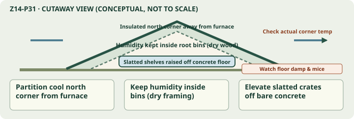

Z14-P31 · Food production and preservation · New manuscript
Adapt modern basements and closets safely for cold produce storage
Create functional cool-storage zones inside ordinary heated homes without building costly underground cellars or causing house moisture damage.
When it applies · Modern homes with heated basements, unheated mudrooms, cool north-facing closets, or crawlspaces.
Equipment · Insulated partition or cooler bin, thermometer, slatted shelves raised off floor, and vapor/mold awareness.

Actions
- Locate naturally cooler microclimates inside an ordinary home—such as an unheated north/east foundation corner insulated off from the furnace room, a cool basement stair closet, or an unheated enclosed porch monitored carefully during mild autumn/spring months.[P05]
- Insulate any basement cold-room wall cleanly on the warm-house side with proper vapor control and keep damp produce enclosed inside ventilated bins rather than venting high humidity straight onto bare wood framing where residential mold grows.[P05, U10]
- Elevate all storage bins several inches off basement concrete floors on slatted pallets or shelves to improve air circulation, protect against minor floor dampness, and allow easy inspection for rodent droppings.[P05, P18]
Failure recognition · Piling open sacks of vegetables directly on a damp furnace-room floor at 68°F next to the hot water heater.[P05]
Verify · Confirm measured temperature of the chosen home corner matches crop needs, bins sit off bare floors, and structural wood stays dry.[P05]
Stop or change course · Condensation dripping off floor joists or temperatures dropping below 32°F require re-ventilating or moving crops to safer indoor spots.[P05]
Evidence and editorial notes
- P05 · University of Minnesota Extension · Harvesting and Storing Home Garden Vegetables (current web edition)
- Section: Root-Cellar and Cold-Storage Temperature/Humidity Zones · Conditions: Basements, root cellars, unheated porches, and insulated cold bins
Support: Match stored produce to distinct storage regimes: cold-moist (32–40°F, high humidity for carrots/beets/cabbage), cool-moist (45–50°F for potatoes), cold-dry (32–35°F dry for onions/garlic), and cool-dry (50–55°F dry for winter squash); separate ethylene-producing apples from sensitive vegetables.
Limitations: Storing potatoes below 40°F converts starch to sugar; freezing temperatures ruin unhardened stored roots. · Conflicting evidence: None; prevents treating one basement temperature as universal for all crops.
Editorial note: Core root-cellar zoning and monitoring evidence in Z14. · Specialist reviewer: Post-harvest horticulture and food storage
Primary source · checked 2026-11-24 - P18 · University of Minnesota Extension · Harvesting and Storing Home Garden Vegetables (current web edition)
- Section: Dry Grain, Legume, and Pantry Pest/Moisture Protection · Conditions: Cool dry household pantries storing dry beans, grains, flour, and dehydrated produce
Support: Store dry staples and dehydrated foods in cool (ideally 50–70°F), dark, dry locations inside airtight food-grade containers to prevent moisture absorption, rancidity, rodents, and pantry insects; inspect periodically for clumping, webbing, or off-odors.
Limitations: Heat, humidity, and light degrade nutrients and accelerate fat rancidity in whole grains and nuts far faster than refined staples. · Conflicting evidence: None; avoids fabricated 25-year shelf-life promises.
Editorial note: Grounds dry-goods storage, pest exclusion, and spoilage inspection. · Specialist reviewer: Food storage and Extension specialist
Primary source · checked 2026-11-24 - U10 · FEMA / Ready.gov · Winter Weather (current web edition)
- Section: Winter Household Resilience > Frozen Pipes, Ice Dams, and Heating Loss · Conditions: Sub-zero Upper Midwest winter outages and prolonged cold snaps
Support: Prevent burst pipes by insulating exposed lines, keeping cabinet doors open, shutting off and draining water lines per plumbing guidance if indoor temperatures drop toward freezing, and consolidating household occupants into one safe insulated interior room.
Limitations: Draining hydronic boilers or gas water heaters requires exact manufacturer/plumber steps to prevent equipment damage or gas leaks. · Conflicting evidence: None; regionalizes winter home defense for Minnesota conditions.
Editorial note: Anchors winter pipe protection, thermal-zone consolidation, and abandonment thresholds. · Specialist reviewer: Residential plumbing, HVAC, and cold-weather emergency management
Primary source · checked 2026-11-24
Source lineage · UMN Extension Harvesting and Storing Vegetables; new manuscript · Classification · New manuscript.